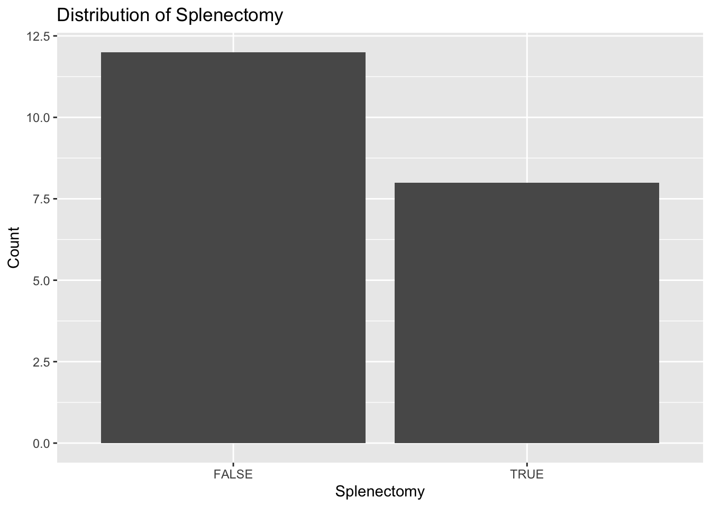
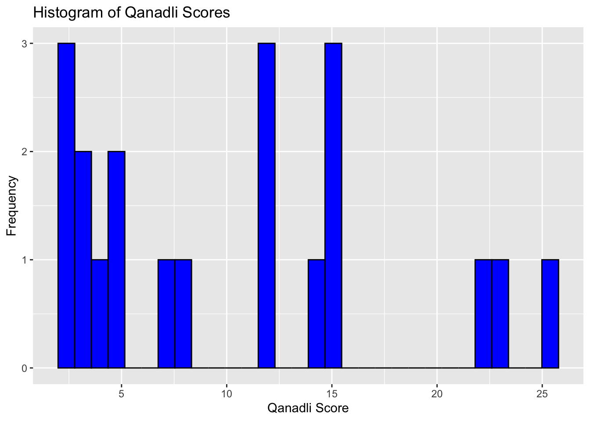

# TODO:
# Fix links on Rpubs version.
# Shorten a bit for 1h session
# Change structure to intentionally start people off installing, then progress
# I think perhaps the initial data pull in didn't work?
# Trouble shoot regression and chi2 equivalence... may be easier with linear regression.
# Add some information on distributions and assumptions
# Create an example of using chatgpt to troubleshoot an errorHow to Do the Stats for Your Fellowship Project
Learning Objectives:
- Set Up Statistical Software
- Share “tacit knowledge” (how it’s actually done) of how to choose a statistical analyses and perform it.
- Understanding the structure of frequentist statistical tests
- Understand the logic of regression models
Bad news: you’ll need to learn how to do statistical analyses:
- realistically, you’ll probably have to do your own stats somewhat
- if you join a project that has a statistican (or get CTSI assistance), you’ll still need to be able to specify, critique, and interpret the analyses. It will help substantially to have (at least) basic working knowledge.
Statistical Programming
| R | Stata | Python | |
| Cost | Free | Requires License | Free |
| IDE | RStudio | Built in editor | Many (Visual Code best) |
| Strengths | Best epi / trials libraries for helpful functions | Simple functionality; powerful quasi-experimental/Meta-analysis. U of U MSCI uses. | Best NLP, machine learning libraries |
| Weakness | Clunky syntax; many ‘dialects’ | Simple syntax | Moderately Complex Syntax |
| Explainable Programming* | Quarto | No options | Jupyter |
*The idea that code should be readable by consumers of science has caught on in more quantitative fields (Math, CS), but will be coming to medicine. Long overdue. Learn now.
Objective 1: Get Set Up
| Step 1: | Install R Language | https://cran.r-project.org/ | |
| Step 2: | Install RStudio | https://posit.co/downloads/ | RStudio is an IDE (development environment) |
| Step 3: | Install Quarto (formerly Markdown) | https://quarto.org/docs/get-started/ | Facilitates sharing and explaining your code. Will soon be standard in medical science. |
| Step 4: | Download this document | https://github.com/reblocke/fellow_stats | “fellow_stats.qmd” |
This page is made using Quarto.
Objective 2(a): How to do a statistical analysis
Step 0: Save yourself a headache and collect your data in a processable format https://open.substack.com/pub/statsepi/p/simple-tips-for-recording-data-in
Step 1: Data Wrangling
- Each row is an observation (usually a patient)
- Each column contains only 1 type of data (more below)
- No free text (if you need to, categorize responses)
Step 2: For each data element, consider the data type
- Binary (aka dichotomous scale): e.g. Yes or No, 0 or 1
- Unordered Categorical (nominal scale): e.g. Utah, Colorado, Nevada, Idaho
- Ordered Categorical (ordinal scale): e.g. Room air, nasal cannula, HFNC, intubated, ECMO, dead
- Continuous (interval & ratio scales - differ by whether 0 is special): e.g. Temperature (Celsius or Kelvin, respectively)
| dichotomous | nominal | ordinal | interval | |
| a.ka. | binary | categorical | ordered categorical | continuous |
| n | X | X | X | X |
| % | X | X | X | X |
| min | X | X | ||
| max | X | X | ||
| range | X | X | ||
| mode | X | X | X | X |
| mean | X | |||
| median | X | X | ||
| IQR | X | X | ||
| Std. dev. | X | |||
| Std. err. | X |
From: Stoddard GJ. Biostatistics and Epidemiology Using Stata: A Course Manual. Salt Lake City, UT: University of Utah School of Medicine.
Step 3: Visualize the distribution of each data-point (detect outliers, data entry errors, etc.)
Darren’s hypothetical code lives in a spreadsheet “darren_proj.xlsx”:
Here is some code that loads the excel spreadsheet into R (we’ll revisit)
Attaching package: 'dplyr'The following objects are masked from 'package:stats':
filter, lagThe following objects are masked from 'package:base':
intersect, setdiff, setequal, unionIt’s already (mostly) clean.
Let’s summarize it:
summary(darren_data_sheet) patient_id splenectomy prox_v_dist qanadli
Min. : 1.00 Length:20 Length:20 Min. : 2.00
1st Qu.: 5.75 Class :character Class :character 1st Qu.: 3.75
Median :10.50 Mode :character Mode :character Median :10.00
Mean :10.50 Mean :10.30
3rd Qu.:15.25 3rd Qu.:15.00
Max. :20.00 Max. :25.00
got_cteph? hosp
Min. :0.00 Length:20
1st Qu.:0.00 Class :character
Median :0.00 Mode :character
Mean :0.25
3rd Qu.:0.25
Max. :1.00 Hmmm.. what’s wrong with this?
R need to be told that the binary variables are binary (and not characters)
library(dplyr)
# Convert 'y'/'n' in the splenectomy column to TRUE/FALSE
darren_data_sheet <- darren_data_sheet %>%
mutate(splenectomy = ifelse(splenectomy == "y", TRUE, FALSE))
# Assuming darren_data_sheet is your dataframe
darren_data_sheet <- darren_data_sheet %>%
mutate(`got_cteph?` = ifelse(`got_cteph?` == 1, TRUE, FALSE))Let’s visualize each element:
library(ggplot2)
# First, the binary ones
# Plot for splenectomy
ggplot(darren_data_sheet, aes(x = factor(splenectomy))) +
geom_bar() +
labs(title = "Distribution of Splenectomy", x = "Splenectomy", y = "Count")
# Plot for prox_v_dist
ggplot(darren_data_sheet, aes(x = factor(prox_v_dist))) +
geom_bar() +
labs(title = "Distribution of Proximal vs. Distal", x = "Proximal vs Distal", y = "Count")# Plot for got_cteph?
ggplot(darren_data_sheet, aes(x = factor(`got_cteph?`))) +
geom_bar() +
labs(title = "Distribution of CTEPH Diagnosis", x = "Got CTEPH?", y = "Count")The categorical one:
# Bar chart for hosp
ggplot(darren_data_sheet, aes(x = factor(hosp))) +
geom_bar(fill = "coral", color = "black") +
labs(title = "Distribution of Hospital", x = "Hospital", y = "Count") +
theme(axis.text.x = element_text(angle = 45, hjust = 1)) # Adjust text angle for better readability if neededand finally, the continuous one:
# Histogram for qanadli
ggplot(darren_data_sheet, aes(x = qanadli)) +
geom_histogram(bins = 30, fill = "blue", color = "black") +
labs(title = "Histogram of Qanadli Scores", x = "Qanadli Score", y = "Frequency")
Objective 3: the Logic of Frequentist Inferential Statistics
Hume: we cannot directly observe causation
If there is an association between an ‘exposure’ and an ‘outcome’, there are 4 possible explanations
- Chance
- Confounding (some other factor influences the exposure and the outcome)
- Bias
- Or, causation (meaning, a real effect)
Disjunctive syllogism:
When you have eliminated the impossible, whatever remains, however improbable, must be the truth.
- Sherlock Holmes
*note: Bayesian analysis follows a different logic.
P-values ONLY address possibility 1: how likely is it that chance alone could explain the observed result If the two variables were not correlated, what the likeliihood that you’d see as extreme results or more - just as a result of chance?
Consider: if I start flipping a coin, how many consecutives “Heads” need to occur before you’ll suspect it’s not a fair coin?
| Sequence | Flips | P-value |
| HH | 2 flips | 0.25 |
| HHH | 3 flips | 0.125 |
| HHHH | 4 flips | 0.0625 |
| 4.32 flips | 0.05 | |
| HHHHH | 5 flips | 0.03125 |
More at: https://stat.lesslikely.com/s-values/
IMPORTANT POINT: the p-value is NOT the probability that the coin is biased. It is the probability of seeing that result (or more extreme) ASSUMING the coin is biased.
Sidebar: understanding multiplicity: If we all flipped a coin 5 times, what is the chance that one of us would get 5 heads in a row?
- If 10 people = (1-0.03125)^10 = 0.727. 23.3% of at least 1 HHHHH -> we’re back to weak evidence of a real effect.
- This is obviously true when multiple tests are reported, but less obviously also true if you try several analyses and choose the “best one” after seeing the result. Hence, prespecification.
‘Signal to noise’: if the alternative hypothesis is that the coin is subtly imbalanced, it’ll be a much harder to detect signal. This is the logic of power analysis - if you’re looking for a subtle signal (e.g. small difference, noisy data, rare events), you’ll need a bigger study.
However, there is no free lunch: a statistical tests makes assumptions about the data, and if those assumptions hold in reality, then the implications from the analysis follow.
Example interpretation:
If the p-value from a Chi2 test is P=0.03 - we say it’s as unlikely this would occur from just chance as it would be to flip a fair coin heads 5 times in a row.
IF observations are independent; both variables are categorical; there are enough observations of each, then it is unlikely chance alone explains the difference.
Using the usual significance threshold (alpha), IF the assumptions hold, we conclude it is unlikely chance alone caused the finding (though it could have been confounding, bias, or a real effect).
How do you choose the right test?
What type of variables? How many groups? Are the samples correlated (e.g. observation from the same patient at two different times)?
| Level of measurement of outcome variable | Two Independent Groups | Three or more Independent Groups | Two Correlated* Samples | Three or more Correlated* Samples |
| Dichotomous | chi-square or Fisher’s exact test | chi-square or Fisher-Freeman-Halton test | McNemar test | Cochran Q test |
| Unordered Categorical | chi-square or Fisher-Freeman-Halton test | chi-square or Fisher-Freeman-Halton test | Stuart-Maxwell test | Multiplicity adjusted Stuart-Maxwell tests# |
| Ordered categorical | Wilcoxon-Mann-Whitney (WMW) test | Old School***: Kruskal-Wallis analysis of variance (ANOVA) New School***: multiplicity adjusted WMW test |
Wilcoxon sign rank test | Old School# Friedman two-way ANOVA by ranks New School# Mulitiplicity adjusted Wilcoxon sign rank tests |
| Continuous | independent groups t-test | Old school***: oneway ANOVA New school***: multiplicity adjusted independent groups t tests |
paired t-test | mixed effects linear regression |
| Censored: time to event | log-rank test | Multiplicity adjusted log-rank test | Shared-frailty Cox regression | Shared-frailty Cox regression |
From: From: Stoddard GJ. Biostatistics and Epidemiology Using Stata: A Course Manual. Salt Lake City, UT: University of Utah School of Medicine.
How can you collaborate effectively with a statistician? They will know these assumptions and can tell you when your analyses makes dubious assumptions (if you communicate the constraints of the problem correctly)
Examples from Darren
What test would we use to assess if “splenectomy” and “prox_v_dist” are associated beyond what’s attributable to chance?
To test if “splenectomy” and “hosp” are associated?
If “splenectomy” and “qanadli” are associated?
chi2_test_result <- chisq.test(darren_data_sheet$splenectomy, darren_data_sheet$prox_v_dist)Warning in chisq.test(darren_data_sheet$splenectomy,
darren_data_sheet$prox_v_dist): Chi-squared approximation may be incorrectprint(chi2_test_result)
Pearson's Chi-squared test with Yates' continuity correction
data: darren_data_sheet$splenectomy and darren_data_sheet$prox_v_dist
X-squared = 1.1122e-31, df = 1, p-value = 1chi2_test_result <- chisq.test(darren_data_sheet$splenectomy, darren_data_sheet$hosp)Warning in chisq.test(darren_data_sheet$splenectomy, darren_data_sheet$hosp):
Chi-squared approximation may be incorrectprint(chi2_test_result)
Pearson's Chi-squared test
data: darren_data_sheet$splenectomy and darren_data_sheet$hosp
X-squared = 0.13889, df = 3, p-value = 0.9868t_test_result <- t.test(qanadli ~ splenectomy, data = darren_data_sheet)
print(t_test_result)
Welch Two Sample t-test
data: qanadli by splenectomy
t = 0.90543, df = 16.101, p-value = 0.3786
alternative hypothesis: true difference in means between group FALSE and group TRUE is not equal to 0
95 percent confidence interval:
-4.020416 10.020416
sample estimates:
mean in group FALSE mean in group TRUE
11.5 8.5 Objective 4: Understand the logic of regression analysis
Recall, if there is an association between an ‘exposure’ and an ‘outcome’, there are 4 possible explanations
- Chance
- Confounding (some other factor influences the exposure and the outcome)
- Bias
- Or, causation (a real effect)
Randomization addresses point 2 (essentially, converts it to point 1, in that only chance confounding can occur)
For non-randomized data, you must make an argument against point 2. This is the most common use of regression.
[the methods section of your paper is the argument against point 3; pull in RECORD/STROBE recs]
There are at least 3 uses of regression models:
- Inferential Statistics: Hypothesis testing with confounding control
- Descriptive Statistics: Summarize the strength of association
- Prediction of an outcome (e.g. statistical machine learning)
Regression comes with additional assumptions:
- Independent observations (special “mixed models” can relax this)
- The form of the output variable is correct*
- The form of the predictor variables are correct
- The relationship between the predictors are properly specified.**
- Additional constraints (e.g. constant variance)
Thus the logic is: if the assumptions of the models hold in reality, then the described relationships are valid
No model is perfect, but some models are useful
- Morris moment(TM)
Output variable (aka the dependent variable, predicted variable) form determines the type of regression :
| Level of measurement of outcome variable | Two Independent Groups without Confounding Adjustment | Two Independent Groups without Confounding Adjustment |
| Dichotomous | Chi2 Test | logistic regression |
| Unordered categorical | Chi2 Test | multinomial logistic regression |
| Ordered categorical | Wilcoxon-Mann-Whitney | ordinal logistic regression |
| Continuous (normally distributed) | T-test | linear regression |
| Censored: time to event | Log-rank test | Cox regression |
From: From: Stoddard GJ. Biostatistics and Epidemiology Using Stata: A Course Manual. Salt Lake City, UT: University of Utah School of Medicine.
Interpretation:
Regression coefficient = What change in the outcome do you expected if you change the predictor by 1 unit, holding all other variables constant
- For linear regression: additive change in outcome
- For logistic regression: multiplicative change in odds of the outcome
- For Cox regression: multiplicative change in the hazard of the outcome.
Example:
Consider, if we want to test whether ‘splenectomy’ and ‘got_cteph?’ are associated, we could use a chi2 test:
chi2_test_result <- chisq.test(darren_data_sheet$splenectomy, darren_data_sheet$`got_cteph?`)Warning in chisq.test(darren_data_sheet$splenectomy,
darren_data_sheet$`got_cteph?`): Chi-squared approximation may be incorrectprint(chi2_test_result)
Pearson's Chi-squared test with Yates' continuity correction
data: darren_data_sheet$splenectomy and darren_data_sheet$`got_cteph?`
X-squared = 0.27778, df = 1, p-value = 0.5982Alternatively you could specify a logistic regression
(“GLM” standards for ‘general linear model’. Logistic regression is a type of glm where the family is binomial)
logistic_model <- glm(`got_cteph?` ~ splenectomy, data = darren_data_sheet, family = binomial())
# Output the summary of the model to see coefficients and statistics
summary(logistic_model)
Call:
glm(formula = `got_cteph?` ~ splenectomy, family = binomial(),
data = darren_data_sheet)
Coefficients:
Estimate Std. Error z value Pr(>|z|)
(Intercept) -1.6094 0.7746 -2.078 0.0377 *
splenectomyTRUE 1.0986 1.0646 1.032 0.3021
---
Signif. codes: 0 '***' 0.001 '**' 0.01 '*' 0.05 '.' 0.1 ' ' 1
(Dispersion parameter for binomial family taken to be 1)
Null deviance: 22.493 on 19 degrees of freedom
Residual deviance: 21.398 on 18 degrees of freedom
AIC: 25.398
Number of Fisher Scoring iterations: 4
(https://www.dagitty.net/dags.html Daggity is a tool to specify such diagrams)
logistic_model_updated <- glm(`got_cteph?` ~ splenectomy + prox_v_dist, data = darren_data_sheet, family = binomial())
summary(logistic_model_updated)
Call:
glm(formula = `got_cteph?` ~ splenectomy + prox_v_dist, family = binomial(),
data = darren_data_sheet)
Coefficients:
Estimate Std. Error z value Pr(>|z|)
(Intercept) -1.8474 1.0473 -1.764 0.0777 .
splenectomyTRUE 1.1383 1.0762 1.058 0.2902
prox_v_distprox 0.3873 1.0890 0.356 0.7221
---
Signif. codes: 0 '***' 0.001 '**' 0.01 '*' 0.05 '.' 0.1 ' ' 1
(Dispersion parameter for binomial family taken to be 1)
Null deviance: 22.493 on 19 degrees of freedom
Residual deviance: 21.270 on 17 degrees of freedom
AIC: 27.27
Number of Fisher Scoring iterations: 4
Consider: do you want the adjusted or the unadjusted estimate?
Hint: it depends….
Objective 2(b): More guidance for how to do the work
Packages
Other people have mostly done all the analyses you’ll want to do:
- Curated lists of relevant packages: https://cran.r-project.org/web/views/
- `install.packages( )` will install the packages
- `?package` or `?command` will bring up the documentation
Example: Say you want to do a meta-analysis.
Relevant packages: https://cran.r-project.org/web/views/MetaAnalysis.html
The ‘meta’ package looks good. Try using `install.packages(‘meta’)` to install it, then you can you can access the documentation using `?meta`
Let’s try an example… I extracted data on all of the trials comparing high O2 to low O2 targets and uploaded to github.
head(data_sheet)# A tibble: 6 × 15
name author year doi num_randomized num_patients num_high_o2 high_o2_died
<chr> <chr> <dbl> <chr> <dbl> <dbl> <dbl> <dbl>
1 Oxyge… Girar… 2016 10.1… 460 432 216 74
2 CLOSE Panwar 2016 10.1… 104 103 51 19
3 HYPER… Asfar 2017 10.1… 442 434 217 104
4 Lang2… Lang 2018 10.1… 65 65 38 9
5 COMAC… Jakku… 2018 10.1… 123 120 59 20
6 ICU-R… Mackle 2020 10.1… 1000 965 484 157.
# ℹ 7 more variables: high_o2_alive <dbl>, num_low_o2 <dbl>, low_o2_died <dbl>,
# low_o2_alive <dbl>, target <chr>, outcome <chr>, population <chr>authors <- select(data_sheet, author)Now, let’s meta-analyze it:
library(meta)Loading required package: metadatLoading 'meta' package (version 7.0-0).
Type 'help(meta)' for a brief overview.
Readers of 'Meta-Analysis with R (Use R!)' should install
older version of 'meta' package: https://tinyurl.com/dt4y5drs#metabin takes events, total (rather than events, nonevents)
m_ex1 <- meta::metabin(low_o2_died, num_low_o2, high_o2_died, num_high_o2, data = data_sheet, studlab = paste(name, author, year), sm = "OR")
meta::forest(m_ex1, comb.random = FALSE, lab.c = "High Oxygen", lab.e = "Low Oxygen", label.left = "Favors Low O2", label.right = "Favors High O2")And if you want to get really cutting edge, you can do a trial sequential analysis (TSA) on it:
── Attaching core tidyverse packages ──────────────────────── tidyverse 2.0.0 ──
✔ forcats 1.0.0 ✔ stringr 1.5.1
✔ lubridate 1.9.3 ✔ tibble 3.2.1
✔ purrr 1.0.2 ✔ tidyr 1.3.1
✔ readr 2.1.5
── Conflicts ────────────────────────────────────────── tidyverse_conflicts() ──
✖ dplyr::filter() masks stats::filter()
✖ dplyr::lag() masks stats::lag()
ℹ Use the conflicted package (<http://conflicted.r-lib.org/>) to force all conflicts to become errors$study
[1] "character"
$author
[1] "character"
$year
[1] "numeric"
$doi
[1] "character"
$num_randomized
[1] "numeric"
$num_patients
[1] "numeric"
$nI
[1] "numeric"
$eI
[1] "numeric"
$high_o2_alive
[1] "numeric"
$nC
[1] "numeric"
$eC
[1] "numeric"
$low_o2_alive
[1] "numeric"
$target
[1] "character"
$outcome
[1] "character"
$population
[1] "character"$study
integer(0)
$author
integer(0)
$year
integer(0)
$doi
integer(0)
$num_randomized
integer(0)
$num_patients
integer(0)
$nI
integer(0)
$eI
integer(0)
$high_o2_alive
integer(0)
$nC
integer(0)
$eC
integer(0)
$low_o2_alive
integer(0)
$target
integer(0)
$outcome
integer(0)
$population
integer(0)Warning: Unknown or uninitialised column: `order`.
Unknown or uninitialised column: `order`.Warning in RTSA(type = "analysis", data = rtsa_df, outcome = "RR", mc = 0.9, :
NB. The required information size adjusted by Diversity (D^2). This might cause
an under-powered analysis. Consider changing the argument `random_adj` from
`D2` (default) to `tau2`.plot(an_rtsa)
Meaning, we’ve passed futility (at 90% power) for a 10% relative risk reduction a few trials ago. Cool.
Large Language Models: Options:
- OpenAI Chat GPT (requires subscription for best performance; custom GPTs)
- Github CoPilot (programming specific)
- Microsoft CoPilot - access to GPT4 = free through University of Utah
Copilot:
- Visit bing.com/chat.
- Select “sign in with a work or school account” under the Sign in icon in the upper right corner of the page.
- Enter your unid@umail.utah.edu and uNID password.
- Complete Duo two-factor authentication.
- The conversation is protected when a green shield appears in the upper right corner next to your username. It is critical to verify that the green shield is present for all conversations.
Prompt Engineering:
- have the GPT take the persona that you want
- spell out the chain of thougt that you want the GPT to take (either multiple steps in 1 prompt or several prompts building on one another works)
- Give examples or specifications of what you want done. [this is particularly useful because the documents you give it can form a context and examples].
How I used GPT4 creating this workbook:
U of U Resources -
- One Data Science Hub Workshops: https://utah-data-science-hub.github.io/education_archived.html
- Request CTSI help: https://ctsi.utah.edu/cores-and-services/triad
- Intuitive Biostatistics by Harvey Motulsky - https://a.co/d/4NCk2bS